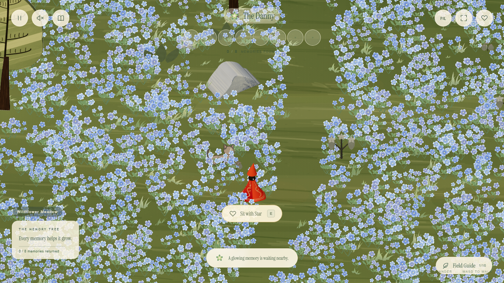
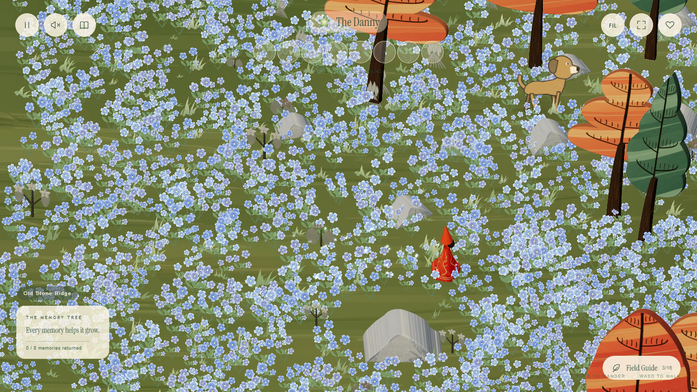
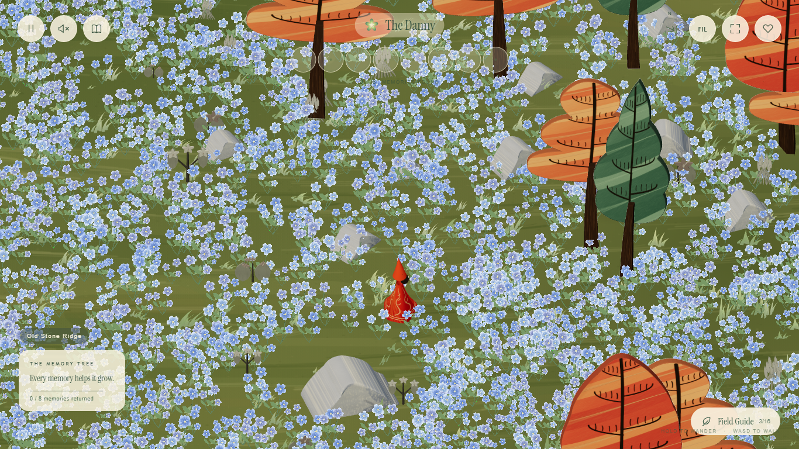
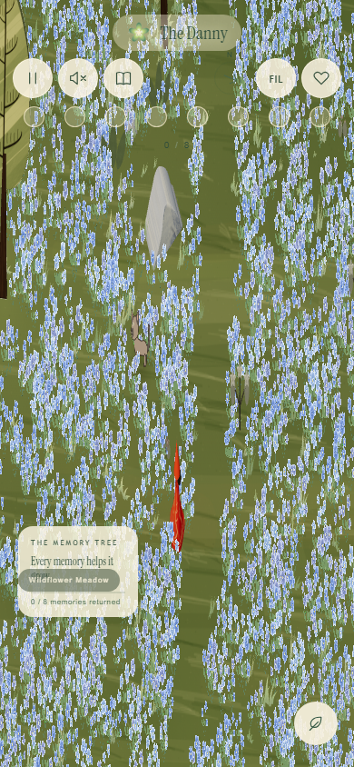

The Danny · Wildflower Meadow
Flowers that move with you.
Flowers bend and part around your feet, then gently spring back after
you pass. Grass yields too. The blue meadow has over three times its
original footprint, with more flowers along its approach and scattered
to the east and north.
Walk in the forest ·
Birds and flower drawings
Actual walking in dev. The plants near the traveler bend while the
flowers behind recover.
A wider flower field
Explore the flower patches
Wildflower Meadow
Meadow approach
Eastern wildflowers
Northern wildflowers

Wildflower Meadow — the main field now stretches across a much wider
area.

After walking: flowers near the feet bend; the wake behind is
recovering.

After settling: flowers behind stand upright again. Those still
touching the body remain parted.

Phone view. Reduced motion keeps immediate contact while stopping wind
and spring oscillation.